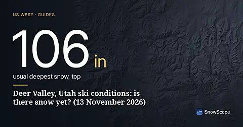
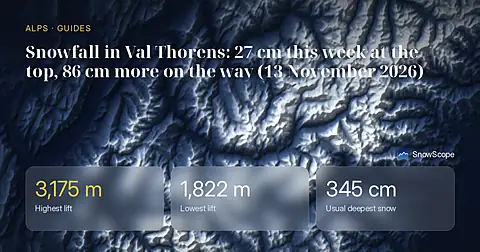

Snow reports · Ski
Daily snow reports for skiers: where the snow is, what is coming and where to ski, from the SnowScope snow map and measuring stations. Every number comes from that day's data.

Deer Valley ski conditions on 13 November 2026: no real snow on the ground yet, about 4 in near the top from the weekend storm, rain on the low East Village side below about 6,700 to 7,600 ft, and 11 in up top over the week.

Park City, Utah snowfall forecast for 13 November 2026: almost no snow on the ground right now, about 5 in near the summit from the weekend storm with a snow level of 7,400 to 7,700 ft, rain at the base, and about 12 in up top over the week.

Alpental snow forecast for 13 November 2026: about 1 in on the upper mountain, rain almost to the summit this weekend with a snow level near 5,400 to 5,600 ft, then 4 to 5 in of mixed rain and snow up top next week.

Bogus Basin snow check for Boise skiers on 13 November 2026: no snow on the ground yet, rain and mixed snow this weekend with a snow level near 6,300 to 6,800 ft, then colder air and about 8 in at the summit by next week.

The Sillian (Hochpustertal) ski map with our snow layer on 13 November 2026: 8.6 cm on the top at 2399 m, bare lower slopes, and a week of mixed rain and snow with the snow line near 1,800 to 2,000 m.

Silvretta Montafon snow conditions on 13 November 2026: 4.5 cm on the top at 2421 m, bare mid-mountain and valley, about 40 cm on the way up high this week while the valley gets rain below 1,500 m.

Snow depth in Sölden on 13 November 2026: about 9 cm at the top (3245 m), 5 cm at mid-mountain, none in the valley at 1346 m. 25 cm forecast up high this week, rain below about 1620 m. Glacier vs village, with 46 past winters.

Snowfall in Val Thorens, 13 November 2026: 27 cm fell at the top (3175 m) and 17 cm at 2498 m over seven days; snow depth is 50 cm and 8 cm. Next seven days: 86 cm at the top, 73 cm at 2498 m, snow line well below the village. Usual snowfall season from 46 winters.

Snow depth in Chamonix on 13 November 2026, height by height: nothing on the valley floor, 1 cm at 2001 m, 12 cm at the top of Brévent-Flégère (2486 m), 5 to 24 cm at the top of the Grands Montets (2768 m). About a metre forecast up high this week, rain in the valley. How deep Chamonix usually gets, from 46 winters.

Les Menuires snow report for 13 November 2026: 28 cm at the top (2838 m), none lying at 2112 m or 1386 m. About 80 cm due at the top in seven days, snow line around 1500 to 1700 m. Why Val Thorens, 450 m higher up the same valley, already has more.

Tignes snow conditions on 13 November 2026: 42 cm at the top (3447 m), 12 cm at 2503 m, a bare valley at 1559 m, and 99 cm forecast at the top over seven days, with rain below about 1700 m. How it compares with 46 past winters.

A slope map of Les Grands Montets and seven other ski areas shows how much of the ground is steeper than 30°, 35° and 40°, and why that line matters for avalanches.

A cheap 3-day Lake Como plan for December with real 2026-27 prices: trains, ferries, a funicular and a ski day at Piani di Bobbio or Madesimo, what you save compared with Cortina, and the chance of snow at Christmas.

How much water the Atlas snow may hold in February 2027: the European seasonal forecast is about 3 °C warmer and wetter in the west and south, so snow odds stay low across Morocco's river basins.